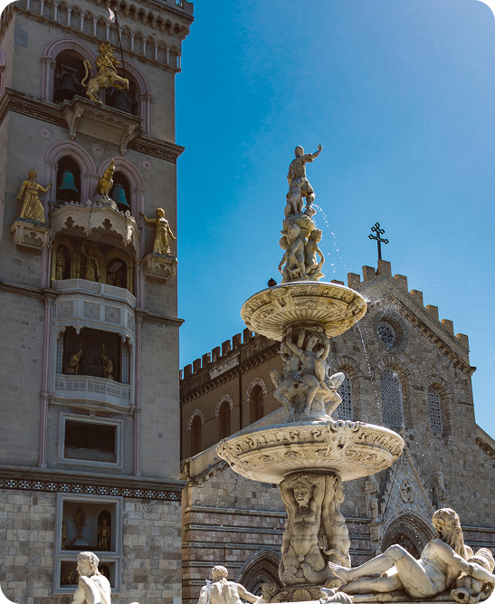

Arte e bellezze della piazza
Piazza Duomo è la piazza principale del centro storico di Messina, luogo di incontro tra il patrimonio religioso, storico e civile cittadino. Si trova davanti alla Cattedrale (Duomo) della città, ed è considerata il cuore pulsante della vita messinese fin dal Medioevo. La piazza è dominata dalla Cattedrale di Messina, dedicata a Santa Maria Assunta. L’edificio originario risale al XII secolo in stile normanno, ma è stato ricostruito più volte a causa di terremoti e danni, in particolare dopo il sisma del 1908.
Al centro della piazza si trova la Fontana di Orione, realizzata nel 1550 circa dallo scultore Giovanni Angelo Montorsoli, allievo di Michelangelo. La fontana rappresenta figure mitologiche e i quattro fiumi più celebri, ed è dedicata al leggendario fondatore di Messina, Orione.
Uno dei principali simboli di Piazza Duomo è il campanile dell’orologio astronomico, alto circa 60 m, famoso per essere uno dei più grandi e complessi al mondo. Tutti i giorni a mezzogiorno la torre si anima con figure meccaniche bronzee che raccontano scene storiche e leggende locali, attirando residenti e turisti.